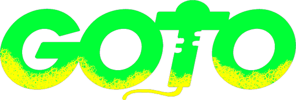

Lost a window in a sea of windows? Hunting for it with the mouse and Alt+Tab is slow and annoying. goto brings it to the front, just say where you want to go. On Linux, fully offline.
Hold a key or just speak, the way you'd tell a person: "goto slack john doe".
It figures out which window, tab or conversation you mean, across everything you have open.
The right window snaps to the front. No mouse, no endless Alt+Tab.
Your voice never leaves your computer. Everything runs locally, nothing is sent to the cloud.
"goto terminal logs", "goto slack", "goto browser" (focuses the only open browser).
"goto chrome github" uses Chrome's native tab search to jump straight to the right tab.
"goto slack john doe" opens the conversation via Jump to (Ctrl+K).
"goto vscode app config" opens the file via Quick Open (Ctrl+P).
"goto", "go to", "good to", "gotchu"... recognition forgives the variations.
Each program is an isolated adapter. Adding a new app is one file, no core changes.
One line, that's it:
curl -fsSL https://espigah.github.io/goto/install.sh | bashOr grab a package:
# Debian / Ubuntu
sudo apt install ./goto_<version>_linux_amd64.deb
# Fedora / RHEL
sudo dnf install ./goto_<version>_linux_amd64.rpm
# Portable (tar.gz)
tar xzf goto_<version>_linux_amd64.tar.gz && ./gotoPrefer one portable file that just runs? Grab the .AppImage from the releases.
A one-time voice pack downloads on first run. goto lives in the system tray and can start with your login.
goto exposes desktop actions as MCP tools. Connect it and Claude Code can focus windows, switch tabs and open conversations for you:
claude mcp add --transport stdio goto -- /path/to/goto mcpYour windows, one sentence away. Free, open source and private, for Linux.
⬇️ Get goto